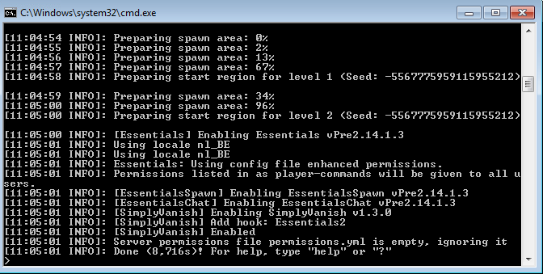
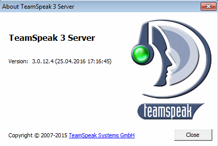

Test-opstelling / -omgeving ontwerpen, opzetten en gebruiken
Voor deze opgave van de GIP gaan we het hebben over twee verschillende applicaties, Minecraft en Teamspeak. Het zijn twee bekende applicaties waarbij dedicated servers enorm belangrijk zijn, dat is één van de redenen dat we voor deze hebben gekozen. Een andere reden is het feit dat we zelf al bekend/vertrouwd zijn met de applicaties en dus al de nodige ervaring hebben om aan de taak te beginnen. Om te beginnen maken we gebruik van Teamspeak, een applicatie waarmee je met elkaar kunt praten, net zoals Skype. Het verschil is dat het wordt gehost door eigen servers, daardoor kan je administrators en andere rechten kunt toepassen. Ten tweede hebben we Minecraft, een spel waar je jouw eigen wereld kan creëren, proberen te overleven is de boodschap. Dedicated servers worden hierbij minder gebruikt, het is niet verplicht. Je kan, indien je dat wilt, solo/alleen spelen. Teamspeak is groter dan Minecraft, vooral op gebied van dedicated servers. De reden hiervan is simpel, je gebruikt deze applicatie gecombineerd met alle games. Minecraft is één van de games waarbij je het kan gebruiken, maar er zijn nog vele andere.
Stappen
- We gaan bij beide eerst de server gewoon opzetten en zien of het effectief draait. Hiervoor is alle hardware nodig dat u in de onderstaande kolom kan zien.
- Als dit allemaal in orde is gaan we nazien of er andere mensen op kunnen en de tool ook echt werkt. Dit doen we door zowel Jens, Ricardo, Maarten en Bert op de server te laten werken.
- Nu gaan we testen of het ook meerdere mensen aankan en sporen we dus klasgenoten/ kennissen aan om ook op de server te komen.
| Onderdelen | Minecraft | Teamspeak |
|---|---|---|
| hardware | 6gb RAM - Twee netwerkingangen | 4gb RAM - 3 HDD’s (75gb) in RAID1 - Twee netwerkingangen |
| Software | Windows Server 2008 R2 - Minecraft server - java - duc NO-IP | Linux Debian 8 - Teamspeak 3 server linux - duc NO-IP - overige software voor firewall |
| Hoe verbinden? | Minecraft | Teamspeak |
Minecraft
Heb jij interesse om een Minecraft dedicated server op te starten? Bekijk hieronder de voor- en nadelen!
Voordelen
- Jij bent de administrator, jij hebt de leiding. Vind jij het ook zo leuk om te bepalen wat iemand wel of niet kan?
- Waarnemen wat mensen op jouw server hebben gemaakt, zo merk je hoe cruciaal je bent voor hen.
- Indien je server populair wordt, kan het zijn dat mensen doneren. Op deze manier kan je alle kosten terugwinnen of misschien zelfs winst maken!
- Je kan het spel naar eigen behoren aanpassen. Vind jij iets niet leuk? Dan schakel je dit zelf uit.
Nadelen
- Kost geld, zonder donaties maak je verlies.
- De server kan stress of klachten veroorzaken. Voortdurend hopen dat de server nog online is, want anders krijg je klachten van de spelers.
- Je kan niet altijd de juiste beslissing nemen voor elke speler. De ene heeft een andere voorkeur dan de andere.
- In begin gaat het moeizaam, het is makkelijker indien je ervaring hebt.
- Het vraagt soms veel tijd door problemen en dergelijke.

Teamspeak
We zijn begonnen aan de taak door de rollen te verdelen. Ricardo wilde de dedicated server maken, Bert en Jens schreven de teksten en Maarten ging ze verbeteren. Op het eerste zicht leek alles te werken, de server startte op en deed zijn ding. Iets later doken er toch een aantal foutjes op, maar die werden al snel opgelost. Vanaf het moment dat de server foutloos draaide, konden wij aan de hand van het IP-adres dat hij ons had gegeven op zijn server gaan. Dit ging met het programma Teamspeak, hiermee kan men communiceren met elkaar zoals Skype maar alleen als je op dezelfde server zit. Na een aantal keer testen leken er geen problemen te zijn en zo konden wij er vanuit gaan dat de Teamspeakserver uitstekend functioneerde.
Voordelen
Het is een private server, dit wil zeggen dat je het IP moet vragen aan de administrator. Je hangt dus niet af van de servers van een groot bedrijf, zoals bijvoorbeeld Skype. Een ander voordeel is het feit dat de administrator iedereen verschillende rollen kan geven, hiermee bedoel ik dat hij de ene persoon meer rechten kan geven dan de andere. Soms heeft dit een nadeel. Het zou bijvoorbeeld kunnen dat de persoon met het meeste rechten irritant wilt doen, maar dan is het aan de administrator om dat op een goede manier op te lossen. Teamspeak geeft de mogelijkheid om op één server verschillende channels te maken, bijvoorbeeld een channel voor de gamers of een channel voor de mensen die dezelfde serie aan het kijken zijn. Zo hoef je maar één server te draaien om toch verschillende channels te hebben. Het laatste voordeel is dat zowel Teamspeak als de server gratis zijn en je zelf kan bepalen wanneer je de server af- of aanzet.
Nadelen
Als je wilt dat jouw vrienden kunnen blijven communiceren, moet je een computer hebben die altijd opstaat. Op deze computer moet dan de server gedraaid worden. Als je deze afzet of hij valt uit, kan er niemand meer op de server. Ook heb je een maximum aantal mensen die op de server kunnen, als je dit wilt vermeerderen zal je jezelf een zwaardere computer moeten aanschaffen. De computer waar de server op draait, kan je in sommige gevallen niet meer gebruiken. Het komt er op neer dat je dan een extra pc moet aankopen, met andere woorden: weer een kost dat erbij komt.


Share this post
Twitter
Google+
Facebook
Reddit
LinkedIn
StumbleUpon
Email